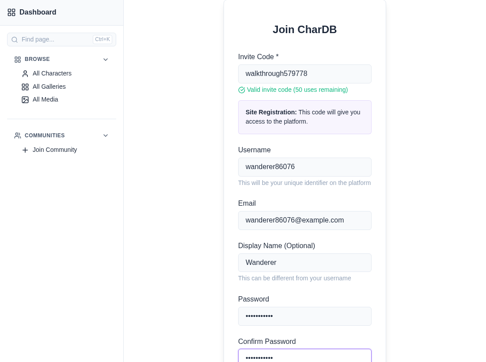
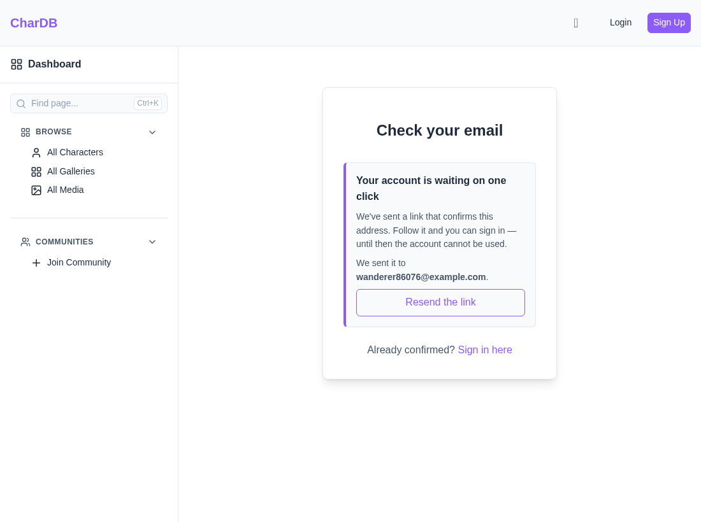
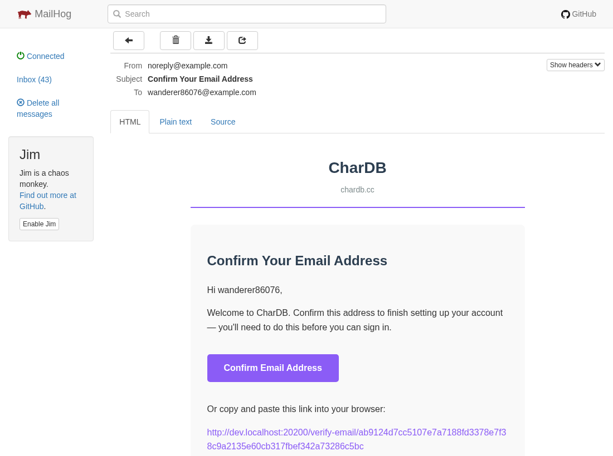
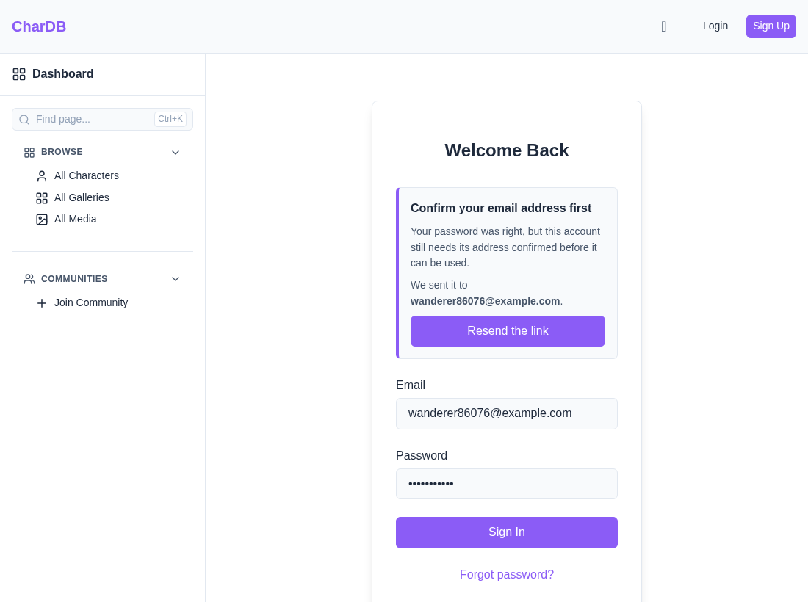
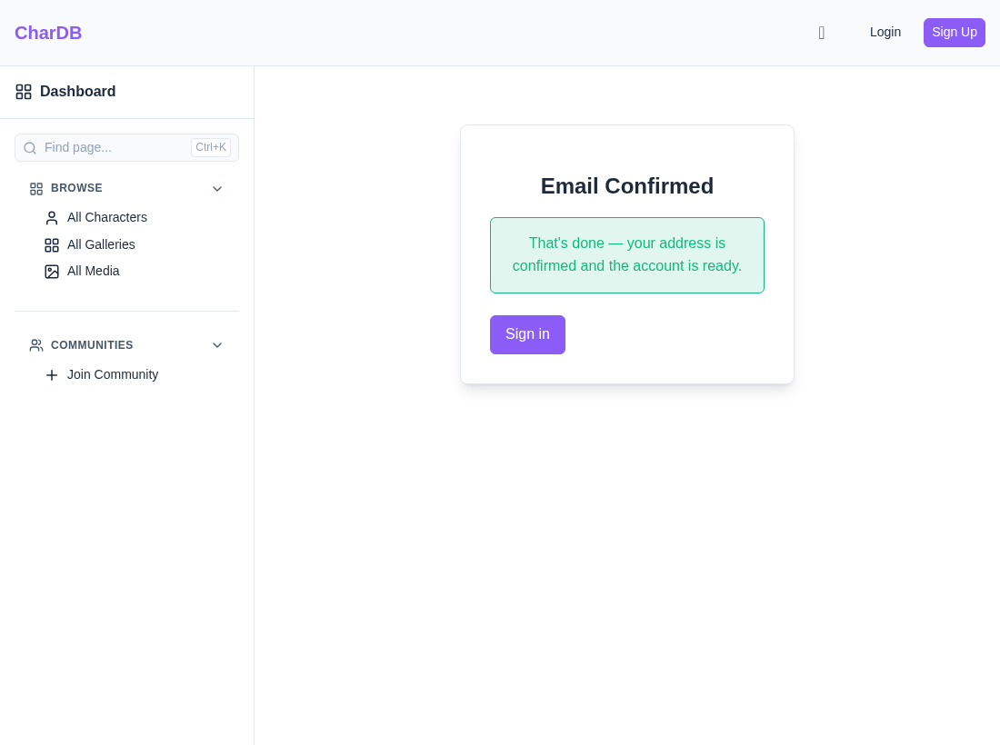
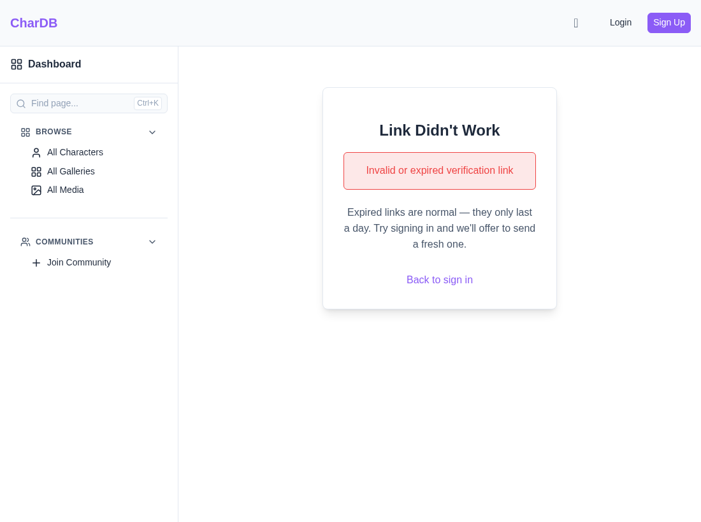

An account opens when its address answers
Signing up used to hand back a session immediately, and nothing ever checked that the address on the account belonged to the person holding it. Now signup sends a link and nothing else: the account exists, and stays shut until somebody follows that link.
The reason is deliverability, not ceremony. Mail to a typo'd address bounces on every send, and a stranger who never signed up reports it as spam rather than hunting for an unsubscribe link. Both attach to the sending domain. There is a security half too: whoever really owns a mistyped address would otherwise receive that account's password resets.
Single use, good for 24 hours, sent the moment you sign up.
Signing in is refused until the address answers.
The hard ceiling on how much mail one address can receive.
The form is unchanged — invite code, username, address, password. What changes is where it lands.


One button and the same link in plain text underneath, for the mail clients that will not render the button.

The link carries the token as the last path segment:
The token is 32 random bytes written as hex, which matters for two
reasons. Only its SHA-256 is stored, so the database cannot give the
link back to anybody who reads it — including us. And hex has
no . in it: a dot in the last path segment makes the
single-page app's history fallback skip its rewrite, and the page
would 404 before it ever loaded.
The password is checked first and the refusal comes after it, so the login form cannot be used to find out which addresses have accounts. Get the password wrong and you are told the credentials are wrong, whatever state the account is in.

The page redeems on load rather than behind another button — the token is already in the URL, so a button would only add a step.

Links last a day. An expired one, a spent one on an account that is still unconfirmed, and one that was never minted all end here.

The way out is the login screen: the right password on an unconfirmed account produces the resend offer from step 3.
A feature that mails an address on request is a feature somebody can point at a stranger. So there is a ceiling, and it is a lifetime count rather than a window — a window resets, and a script is happy to wait.
The reach is narrower than it looks. An address can only ever be registered once, so signup spends at most one of the six; and a resend for an address with no unconfirmed account behind it sends nothing at all. There is no way to put mail in the inbox of somebody who never signed up.